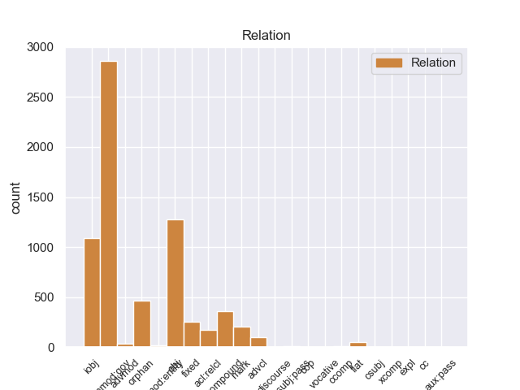
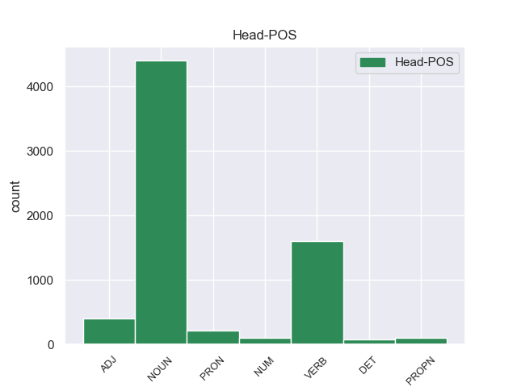
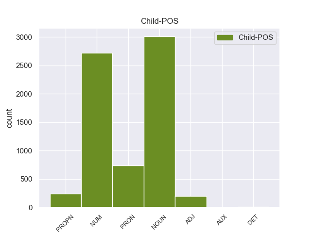

Distribution of features within this leaf



Agreement Rules sorted by frequency.
- When the dependent token is the numeric modifer governing case of noun(nummod:gov) of the head token, and the dependent token is NUM.
1 Одно один NUM _ Case=Acc|Gender=Neut 3 nummod:gov 3:nummod:gov _
2 красное _ _ _ _ 0 _ _ _
3 перышко перышко NOUN _ Animacy=Inan|Case=Acc|Gender=Neut|Number=Sing 0 _ _ _
4 Павлов _ _ _ _ 0 _ _ _
5 взял _ _ _ _ 0 _ _ _
6 с _ _ _ _ 0 _ _ _
7 собой _ _ _ _ 0 _ _ _
8 : _ _ _ _ 0 _ _ _
9 он _ _ _ _ 0 _ _ _
10 уже _ _ _ _ 0 _ _ _
11 научил _ _ _ _ 0 _ _ _
12 близнецов _ _ _ _ 0 _ _ _
13 грубости _ _ _ _ 0 _ _ _
14 недоверия _ _ _ _ 0 _ _ _
15 и _ _ _ _ 0 _ _ _
16 потому _ _ _ _ 0 _ _ _
17 нуждался _ _ _ _ 0 _ _ _
18 в _ _ _ _ 0 _ _ _
19 вещественном _ _ _ _ 0 _ _ _
20 доказательстве _ _ _ _ 0 _ _ _
21 . _ _ _ _ 0 _ _ _
1 Возле _ _ _ _ 0 _ _ _
2 поселка _ _ _ _ 0 _ _ _
3 находился _ _ _ _ 0 _ _ _
4 санаторий _ _ _ _ 0 _ _ _
5 , _ _ _ _ 0 _ _ _
6 там _ _ _ _ 0 _ _ _
7 шло _ _ _ _ 0 _ _ _
8 строительство _ _ _ _ 0 _ _ _
9 и _ _ _ _ 0 _ _ _
10 была _ _ _ _ 0 _ _ _
11 нужда _ _ _ _ 0 _ _ _
12 в _ _ _ _ 0 _ _ _
13 главном _ _ _ _ 0 _ _ _
14 инженере _ _ _ _ 0 _ _ _
15 ; _ _ _ _ 0 _ _ _
16 под _ _ _ _ 0 _ _ _
17 боком _ _ _ _ 0 _ _ _
18 располагалась _ _ _ _ 0 _ _ _
19 отличная _ _ _ _ 0 _ _ _
20 школа школа NOUN _ Animacy=Inan|Case=Nom|Gender=Fem|Number=Sing 0 _ _ _
21 - _ _ _ _ 0 _ _ _
22 десятилетка десятилетка NOUN _ Animacy=Inan|Case=Nom|Gender=Fem|Number=Sing 20 compound 20:compound SpaceAfter=No
23 , _ _ _ _ 0 _ _ _
24 где _ _ _ _ 0 _ _ _
25 как _ _ _ _ 0 _ _ _
26 раз _ _ _ _ 0 _ _ _
27 нужен _ _ _ _ 0 _ _ _
28 был _ _ _ _ 0 _ _ _
29 преподаватель _ _ _ _ 0 _ _ _
30 английского _ _ _ _ 0 _ _ _
31 языка _ _ _ _ 0 _ _ _
32 , _ _ _ _ 0 _ _ _
33 а _ _ _ _ 0 _ _ _
34 жена _ _ _ _ 0 _ _ _
35 Павлова _ _ _ _ 0 _ _ _
36 занималась _ _ _ _ 0 _ _ _
37 техническими _ _ _ _ 0 _ _ _
38 переводами _ _ _ _ 0 _ _ _
39 с _ _ _ _ 0 _ _ _
40 английского _ _ _ _ 0 _ _ _
41 . _ _ _ _ 0 _ _ _
1 Он _ _ _ _ 0 _ _ _
2 осторожно _ _ _ _ 0 _ _ _
3 , _ _ _ _ 0 _ _ _
4 за _ _ _ _ 0 _ _ _
5 дужку _ _ _ _ 0 _ _ _
6 , _ _ _ _ 0 _ _ _
7 снял _ _ _ _ 0 _ _ _
8 очки _ _ _ _ 0 _ _ _
9 , _ _ _ _ 0 _ _ _
10 ему _ _ _ _ 0 _ _ _
11 хотелось _ _ _ _ 0 _ _ _
12 получше _ _ _ _ 0 _ _ _
13 рассмотреть _ _ _ _ 0 _ _ _
14 человека _ _ _ _ 0 _ _ _
15 , _ _ _ _ 0 _ _ _
16 задающего задавать VERB _ Animacy=Anim|Aspect=Imp|Case=Acc|Gender=Masc|Number=Sing|Tense=Pres|VerbForm=Part|Voice=Act 0 _ _ _
17 такие _ _ _ _ 0 _ _ _
18 несуразные _ _ _ _ 0 _ _ _
19 вопросы вопрос NOUN _ Animacy=Inan|Case=Acc|Gender=Masc|Number=Plur 16 obj 16:obj SpaceAfter=No
20 , _ _ _ _ 0 _ _ _
21 а _ _ _ _ 0 _ _ _
22 припылившиеся _ _ _ _ 0 _ _ _
23 стекла _ _ _ _ 0 _ _ _
24 только _ _ _ _ 0 _ _ _
25 мешали _ _ _ _ 0 _ _ _
26 . _ _ _ _ 0 _ _ _
1 Норма _ _ _ _ 0 _ _ _
2 избирателей _ _ _ _ 0 _ _ _
3 на _ _ _ _ 0 _ _ _
4 один _ _ _ _ 0 _ _ _
5 территориальный _ _ _ _ 0 _ _ _
6 округ _ _ _ _ 0 _ _ _
7 дана _ _ _ _ 0 _ _ _
8 из _ _ _ _ 0 _ _ _
9 расчета _ _ _ _ 0 _ _ _
10 257,3 _ _ _ _ 0 _ _ _
11 тысячи тысяча NOUN _ Animacy=Inan|Case=Gen|Gender=Fem|Number=Sing 12 nummod:gov 12:nummod:gov _
12 человек человек NOUN _ Animacy=Anim|Case=Gen|Gender=Masc|Number=Plur 0 _ _ _
13 . _ _ _ _ 0 _ _ _
1 Так _ _ _ _ 0 _ _ _
2 Дума _ _ _ _ 0 _ _ _
3 Народного _ _ _ _ 0 _ _ _
4 фронта _ _ _ _ 0 _ _ _
5 Латвии _ _ _ _ 0 _ _ _
6 недавно _ _ _ _ 0 _ _ _
7 одобрила _ _ _ _ 0 _ _ _
8 обращение _ _ _ _ 0 _ _ _
9 своего _ _ _ _ 0 _ _ _
10 правления _ _ _ _ 0 _ _ _
11 , _ _ _ _ 0 _ _ _
12 предложившего _ _ _ _ 0 _ _ _
13 членам _ _ _ _ 0 _ _ _
14 фронта _ _ _ _ 0 _ _ _
15 обсудить _ _ _ _ 0 _ _ _
16 целесообразность _ _ _ _ 0 _ _ _
17 начала _ _ _ _ 0 _ _ _
18 борьбы _ _ _ _ 0 _ _ _
19 за _ _ _ _ 0 _ _ _
20 политическую _ _ _ _ 0 _ _ _
21 и _ _ _ _ 0 _ _ _
22 экономическую _ _ _ _ 0 _ _ _
23 независимость _ _ _ _ 0 _ _ _
24 Латвии _ _ _ _ 0 _ _ _
25 , _ _ _ _ 0 _ _ _
26 т. то PRON _ Animacy=Inan|Case=Nom|Gender=Neut|Number=Sing 28 mark 28:mark _
27 е. _ _ _ _ 0 _ _ _
28 достижение достижение NOUN _ Animacy=Inan|Case=Nom|Gender=Neut|Number=Sing 0 _ _ _
29 ее _ _ _ _ 0 _ _ _
30 суверенитета _ _ _ _ 0 _ _ _
31 за _ _ _ _ 0 _ _ _
32 рамками _ _ _ _ 0 _ _ _
33 государственности _ _ _ _ 0 _ _ _
34 СССР _ _ _ _ 0 _ _ _
35 . _ _ _ _ 0 _ _ _
1 Нет _ _ _ _ 0 _ _ _
2 и _ _ _ _ 0 _ _ _
3 не _ _ _ _ 0 _ _ _
4 было _ _ _ _ 0 _ _ _
5 на _ _ _ _ 0 _ _ _
6 свете _ _ _ _ 0 _ _ _
7 человека _ _ _ _ 0 _ _ _
8 , _ _ _ _ 0 _ _ _
9 столь _ _ _ _ 0 _ _ _
10 лишенного лишить VERB _ Aspect=Perf|Case=Gen|Gender=Masc|Number=Sing|Tense=Past|VerbForm=Part|Voice=Pass 0 _ _ _
11 делового _ _ _ _ 0 _ _ _
12 умения умение NOUN _ Animacy=Inan|Case=Gen|Gender=Neut|Number=Sing 10 iobj 10:iobj SpaceAfter=No
13 , _ _ _ _ 0 _ _ _
14 как _ _ _ _ 0 _ _ _
15 отец _ _ _ _ 0 _ _ _
16 . _ _ _ _ 0 _ _ _
1 Компания _ _ _ _ 0 _ _ _
2 Ford _ _ _ _ 0 _ _ _
3 выпустила _ _ _ _ 0 _ _ _
4 в _ _ _ _ 0 _ _ _
5 ограниченном _ _ _ _ 0 _ _ _
6 количестве _ _ _ _ 0 _ _ _
7 финальную _ _ _ _ 0 _ _ _
8 версию _ _ _ _ 0 _ _ _
9 модели _ _ _ _ 0 _ _ _
10 Lincoln Lincoln PROPN _ Animacy=Inan|Case=Gen|Foreign=Yes|Gender=Fem|Number=Sing 0 _ _ _
11 continental Continental PROPN _ Animacy=Inan|Case=Gen|Foreign=Yes|Gender=Fem|Number=Sing 10 flat 10:flat SpaceAfter=No
12 . _ _ _ _ 0 _ _ _
1 Но _ _ _ _ 0 _ _ _
2 зато _ _ _ _ 0 _ _ _
3 сколько _ _ _ _ 0 _ _ _
4 их _ _ _ _ 0 _ _ _
5 было _ _ _ _ 0 _ _ _
6 потом _ _ _ _ 0 _ _ _
7 , _ _ _ _ 0 _ _ _
8 сколько _ _ _ _ 0 _ _ _
9 верст _ _ _ _ 0 _ _ _
10 проделал _ _ _ _ 0 _ _ _
11 я _ _ _ _ 0 _ _ _
12 по _ _ _ _ 0 _ _ _
13 следам _ _ _ _ 0 _ _ _
14 отца _ _ _ _ 0 _ _ _
15 : _ _ _ _ 0 _ _ _
16 далекий _ _ _ _ 0 _ _ _
17 Иркутск _ _ _ _ 0 _ _ _
18 , _ _ _ _ 0 _ _ _
19 душный _ _ _ _ 0 _ _ _
20 , _ _ _ _ 0 _ _ _
21 пропыленный _ _ _ _ 0 _ _ _
22 Саратов _ _ _ _ 0 _ _ _
23 , _ _ _ _ 0 _ _ _
24 первое _ _ _ _ 0 _ _ _
25 чудо _ _ _ _ 0 _ _ _
26 Ленинграда _ _ _ _ 0 _ _ _
27 , _ _ _ _ 0 _ _ _
28 забытый _ _ _ _ 0 _ _ _
29 богом _ _ _ _ 0 _ _ _
30 Егорьевск _ _ _ _ 0 _ _ _
31 , _ _ _ _ 0 _ _ _
32 Кандалакша _ _ _ _ 0 _ _ _
33 среди _ _ _ _ 0 _ _ _
34 поросших _ _ _ _ 0 _ _ _
35 карликовыми _ _ _ _ 0 _ _ _
36 соснами _ _ _ _ 0 _ _ _
37 сопок _ _ _ _ 0 _ _ _
38 и _ _ _ _ 0 _ _ _
39 похожих _ _ _ _ 0 _ _ _
40 на _ _ _ _ 0 _ _ _
41 осколки _ _ _ _ 0 _ _ _
42 зеркала _ _ _ _ 0 _ _ _
43 озер _ _ _ _ 0 _ _ _
44 , _ _ _ _ 0 _ _ _
45 край _ _ _ _ 0 _ _ _
46 , _ _ _ _ 0 _ _ _
47 разлинованный разлиновать VERB _ Aspect=Perf|Case=Nom|Gender=Masc|Number=Sing|Tense=Past|VerbForm=Part|Voice=Pass 0 _ _ _
48 , _ _ _ _ 0 _ _ _
49 как _ _ _ _ 0 _ _ _
50 ученическая _ _ _ _ 0 _ _ _
51 тетрадь тетрадь NOUN _ Animacy=Inan|Case=Nom|Gender=Fem|Number=Sing 47 advcl 47:advcl SpaceAfter=No
52 , _ _ _ _ 0 _ _ _
53 рядами _ _ _ _ 0 _ _ _
54 колючей _ _ _ _ 0 _ _ _
55 проволоки _ _ _ _ 0 _ _ _
56 , _ _ _ _ 0 _ _ _
57 страшная _ _ _ _ 0 _ _ _
58 Рохма _ _ _ _ 0 _ _ _
59 … _ _ _ _ 0 _ _ _
1 Общий _ _ _ _ 0 _ _ _
2 выброс _ _ _ _ 0 _ _ _
3 вредных _ _ _ _ 0 _ _ _
4 веществ _ _ _ _ 0 _ _ _
5 в _ _ _ _ 0 _ _ _
6 атмосферу _ _ _ _ 0 _ _ _
7 от _ _ _ _ 0 _ _ _
8 стационарных _ _ _ _ 0 _ _ _
9 источников _ _ _ _ 0 _ _ _
10 составляет _ _ _ _ 0 _ _ _
11 примерно _ _ _ _ 0 _ _ _
12 65 _ _ _ _ 0 _ _ _
13 миллионов _ _ _ _ 0 _ _ _
14 тонн _ _ _ _ 0 _ _ _
15 в _ _ _ _ 0 _ _ _
16 год _ _ _ _ 0 _ _ _
17 , _ _ _ _ 0 _ _ _
18 от _ _ _ _ 0 _ _ _
When the dependent token is the indirect object(iobj) of the head token, and the dependent token is PRON.
1 Какое _ _ _ _ 0 _ _ _
2 глубокое _ _ _ _ 0 _ _ _
3 и _ _ _ _ 0 _ _ _
4 волнующее _ _ _ _ 0 _ _ _
5 чувство _ _ _ _ 0 _ _ _
6 вызывали _ _ _ _ 0 _ _ _
7 во _ _ _ _ 0 _ _ _
8 мне _ _ _ _ 0 _ _ _
9 их _ _ _ _ 0 _ _ _
10 непричастность _ _ _ _ 0 _ _ _
11 к _ _ _ _ 0 _ _ _
12 привычной привычный ADJ _ Case=Dat|Degree=Pos|Gender=Fem|Number=Sing 0 _ _ _
13 мне я PRON _ Case=Dat|Number=Sing|Person=1 12 iobj 12:iobj _
14 действительности _ _ _ _ 0 _ _ _
15 , _ _ _ _ 0 _ _ _
16 их _ _ _ _ 0 _ _ _
17 дивно _ _ _ _ 0 _ _ _
18 слаженные _ _ _ _ 0 _ _ _
19 , _ _ _ _ 0 _ _ _
20 узкие _ _ _ _ 0 _ _ _
21 тела _ _ _ _ 0 _ _ _
22 , _ _ _ _ 0 _ _ _
23 четкая _ _ _ _ 0 _ _ _
24 , _ _ _ _ 0 _ _ _
25 выразительная _ _ _ _ 0 _ _ _
26 лепка _ _ _ _ 0 _ _ _
27 лиц _ _ _ _ 0 _ _ _
28 . _ _ _ _ 0 _ _ _
When the dependent token is the adverbial modifier(advmod) of the head token, and the dependent token is PRON.
1 - _ _ _ _ 0 _ _ _
2 " _ _ _ _ 0 _ _ _
3 Чего _ _ _ _ 0 _ _ _
4 его _ _ _ _ 0 _ _ _
5 жалеть _ _ _ _ 0 _ _ _
6 , _ _ _ _ 0 _ _ _
7 все все PRON _ Animacy=Inan|Case=Nom|Gender=Neut|Number=Sing 9 advmod 9:advmod _
8 равно _ _ _ _ 0 _ _ _
9 безотцовщина безотцовщина NOUN _ Animacy=Inan|Case=Nom|Gender=Fem|Number=Sing 0 _ _ _
10 , _ _ _ _ 0 _ _ _
11 - _ _ _ _ 0 _ _ _
12 отвечала _ _ _ _ 0 _ _ _
13 мать _ _ _ _ 0 _ _ _
14 , _ _ _ _ 0 _ _ _
15 - _ _ _ _ 0 _ _ _
16 а _ _ _ _ 0 _ _ _
17 ты _ _ _ _ 0 _ _ _
18 меня _ _ _ _ 0 _ _ _
19 не _ _ _ _ 0 _ _ _
20 попрекай _ _ _ _ 0 _ _ _
21 , _ _ _ _ 0 _ _ _
22 не _ _ _ _ 0 _ _ _
23 на _ _ _ _ 0 _ _ _
24 свои _ _ _ _ 0 _ _ _
25 пью _ _ _ _ 0 _ _ _
26 , _ _ _ _ 0 _ _ _
27 на _ _ _ _ 0 _ _ _
28 чужие _ _ _ _ 0 _ _ _
29 " _ _ _ _ 0 _ _ _
30 . _ _ _ _ 0 _ _ _
When the dependent token is the orphan(orphan) of the head token, and the dependent token is ADJ.
1 Она она PRON _ Case=Nom|Gender=Fem|Number=Sing|Person=3 0 _ _ _
1.1 _ _ _ _ _ 0 _ _ _
2 ничего _ _ _ _ 0 _ _ _
3 , _ _ _ _ 0 _ _ _
4 как _ _ _ _ 0 _ _ _
When the dependent token is the relative clause modifier(acl:relcl) of the head token, and the dependent token is PRON.
1 А _ _ _ _ 0 _ _ _
2 ведь _ _ _ _ 0 _ _ _
3 в _ _ _ _ 0 _ _ _
4 разговоре _ _ _ _ 0 _ _ _
5 участвовали _ _ _ _ 0 _ _ _
6 сотни _ _ _ _ 0 _ _ _
7 активистов активист NOUN _ Animacy=Anim|Case=Gen|Gender=Masc|Number=Plur 0 _ _ _
8 - _ _ _ _ 0 _ _ _
9 комсомольцев _ _ _ _ 0 _ _ _
10 , _ _ _ _ 0 _ _ _
11 среди _ _ _ _ 0 _ _ _
12 которых который PRON _ Case=Gen 7 acl:relcl 7:acl:relcl _
13 было _ _ _ _ 0 _ _ _
14 немало _ _ _ _ 0 _ _ _
15 ребят _ _ _ _ 0 _ _ _
16 высокого _ _ _ _ 0 _ _ _
17 уровня _ _ _ _ 0 _ _ _
18 развития _ _ _ _ 0 _ _ _
19 . _ _ _ _ 0 _ _ _
When the dependent token is the fixed multiword expression(fixed) of the head token, and the dependent token is NOUN.
1 А _ _ _ _ 0 _ _ _
2 это _ _ _ _ 0 _ _ _
3 требует _ _ _ _ 0 _ _ _
4 терпимости _ _ _ _ 0 _ _ _
5 , _ _ _ _ 0 _ _ _
6 уважения _ _ _ _ 0 _ _ _
7 , _ _ _ _ 0 _ _ _
8 умения _ _ _ _ 0 _ _ _
9 жить _ _ _ _ 0 _ _ _
10 бок бок NOUN _ Animacy=Inan|Case=Acc|Gender=Masc|Number=Sing 0 _ _ _
11 о _ _ _ _ 0 _ _ _
12 бок бок NOUN _ Animacy=Inan|Case=Acc|Gender=Masc|Number=Sing 10 fixed 10:fixed SpaceAfter=No
13 , _ _ _ _ 0 _ _ _
14 оставаясь _ _ _ _ 0 _ _ _
15 разными _ _ _ _ 0 _ _ _
16 и _ _ _ _ 0 _ _ _
17 не _ _ _ _ 0 _ _ _
18 во _ _ _ _ 0 _ _ _
19 всем _ _ _ _ 0 _ _ _
20 согласными _ _ _ _ 0 _ _ _
21 друг _ _ _ _ 0 _ _ _
22 с _ _ _ _ 0 _ _ _
23 другом _ _ _ _ 0 _ _ _
24 . _ _ _ _ 0 _ _ _
When the dependent token is the indirect object(iobj) of the head token, and the dependent token is PROPN.
1 Это _ _ _ _ 0 _ _ _
2 убийство _ _ _ _ 0 _ _ _
3 , _ _ _ _ 0 _ _ _
4 по _ _ _ _ 0 _ _ _
5 словам _ _ _ _ 0 _ _ _
6 источника _ _ _ _ 0 _ _ _
7 , _ _ _ _ 0 _ _ _
8 принадлежащего _ _ _ _ 0 _ _ _
9 к _ _ _ _ 0 _ _ _
10 группировке _ _ _ _ 0 _ _ _
11 , _ _ _ _ 0 _ _ _
12 было _ _ _ _ 0 _ _ _
13 предупреждением _ _ _ _ 0 _ _ _
14 другим _ _ _ _ 0 _ _ _
15 палестинцам _ _ _ _ 0 _ _ _
16 , _ _ _ _ 0 _ _ _
17 помогающим помогать VERB _ Aspect=Imp|Case=Dat|Number=Plur|Tense=Pres|VerbForm=Part|Voice=Act 0 _ _ _
18 Израилю Израиль PROPN _ Animacy=Inan|Case=Dat|Gender=Masc|Number=Sing 17 iobj 17:iobj _
19 выслеживать _ _ _ _ 0 _ _ _
20 и _ _ _ _ 0 _ _ _
21 убивать _ _ _ _ 0 _ _ _
22 десятки _ _ _ _ 0 _ _ _
23 боевиков _ _ _ _ 0 _ _ _
24 . _ _ _ _ 0 _ _ _
When the dependent token is the relative clause modifier(acl:relcl) of the head token, and the dependent token is NOUN.
1 В _ _ _ _ 0 _ _ _
2 воскресенье _ _ _ _ 0 _ _ _
3 , _ _ _ _ 0 _ _ _
4 передает _ _ _ _ 0 _ _ _
5 ИТАР-ТАСС _ _ _ _ 0 _ _ _
6 , _ _ _ _ 0 _ _ _
7 США _ _ _ _ 0 _ _ _
8 официально _ _ _ _ 0 _ _ _
9 подтвердили _ _ _ _ 0 _ _ _
10 , _ _ _ _ 0 _ _ _
11 что _ _ _ _ 0 _ _ _
12 в _ _ _ _ 0 _ _ _
13 высоких _ _ _ _ 0 _ _ _
14 спортивных _ _ _ _ 0 _ _ _
15 кроссовках кроссовки NOUN _ Animacy=Inan|Case=Loc|Gender=Fem|Number=Plur 0 _ _ _
16 , _ _ _ _ 0 _ _ _
17 которые _ _ _ _ 0 _ _ _
18 были _ _ _ _ 0 _ _ _
19 на _ _ _ _ 0 _ _ _
20 ногах нога NOUN _ Animacy=Inan|Case=Loc|Gender=Fem|Number=Plur 15 acl:relcl 15:acl:relcl _
21 у _ _ _ _ 0 _ _ _
22 задержанного _ _ _ _ 0 _ _ _
23 , _ _ _ _ 0 _ _ _
24 в _ _ _ _ 0 _ _ _
25 подошвах _ _ _ _ 0 _ _ _
26 были _ _ _ _ 0 _ _ _
27 вмонтированы _ _ _ _ 0 _ _ _
28 два _ _ _ _ 0 _ _ _
29 взрывных _ _ _ _ 0 _ _ _
30 устройства _ _ _ _ 0 _ _ _
31 из _ _ _ _ 0 _ _ _
32 пластиковой _ _ _ _ 0 _ _ _
33 взрывчатки _ _ _ _ 0 _ _ _
34 . _ _ _ _ 0 _ _ _
When the dependent token is the flat multiword expression(flat) of the head token, and the dependent token is ADJ.
1 - _ _ _ _ 0 _ _ _
2 А _ _ _ _ 0 _ _ _
3 голова _ _ _ _ 0 _ _ _
4 у _ _ _ _ 0 _ _ _
5 нее _ _ _ _ 0 _ _ _
6 красная красный ADJ _ Case=Nom|Degree=Pos|Gender=Fem|Number=Sing 0 _ _ _
7 - _ _ _ _ 0 _ _ _
8 красная красный ADJ _ Case=Nom|Degree=Pos|Gender=Fem|Number=Sing 6 flat 6:flat SpaceAfter=No
9 , _ _ _ _ 0 _ _ _
10 так _ _ _ _ 0 _ _ _
11 и _ _ _ _ 0 _ _ _
12 горит _ _ _ _ 0 _ _ _
13 ! _ _ _ _ 0 _ _ _
14 - _ _ _ _ 0 _ _ _
15 пылко _ _ _ _ 0 _ _ _
16 вскричал _ _ _ _ 0 _ _ _
17 младший _ _ _ _ 0 _ _ _
18 . _ _ _ _ 0 _ _ _
When the dependent token is the adverbial clause modifier(advcl) of the head token, and the dependent token is ADJ.
1 Бренды _ _ _ _ 0 _ _ _
2 , _ _ _ _ 0 _ _ _
3 целенаправленно _ _ _ _ 0 _ _ _
4 создаваемые создавать VERB _ Aspect=Imp|Case=Nom|Number=Plur|Tense=Pres|VerbForm=Part|Voice=Pass 0 _ _ _
5 как _ _ _ _ 0 _ _ _
6 кратковременные кратковременный ADJ _ Case=Nom|Degree=Pos|Number=Plur 4 advcl 4:advcl _
7 - _ _ _ _ 0 _ _ _
8 на _ _ _ _ 0 _ _ _
9 один _ _ _ _ 0 _ _ _
10 сезон _ _ _ _ 0 _ _ _
11 или _ _ _ _ 0 _ _ _
12 на _ _ _ _ 0 _ _ _
13 два _ _ _ _ 0 _ _ _
14 - _ _ _ _ 0 _ _ _
15 три _ _ _ _ 0 _ _ _
16 , _ _ _ _ 0 _ _ _
17 призваны _ _ _ _ 0 _ _ _
18 резко _ _ _ _ 0 _ _ _
19 выделять _ _ _ _ 0 _ _ _
20 товар _ _ _ _ 0 _ _ _
21 из _ _ _ _ 0 _ _ _
22 рутинной _ _ _ _ 0 _ _ _
23 череды _ _ _ _ 0 _ _ _
24 стабильных _ _ _ _ 0 _ _ _
25 брендов _ _ _ _ 0 _ _ _
26 и _ _ _ _ 0 _ _ _
27 быстро _ _ _ _ 0 _ _ _
28 мобилизовывать _ _ _ _ 0 _ _ _
29 целевые _ _ _ _ 0 _ _ _
30 группы _ _ _ _ 0 _ _ _
31 трендоидов _ _ _ _ 0 _ _ _
32 . _ _ _ _ 0 _ _ _
When the dependent token is the compound(compound) of the head token, and the dependent token is PROPN.
1 Еще _ _ _ _ 0 _ _ _
2 три _ _ _ _ 0 _ _ _
3 столетия _ _ _ _ 0 _ _ _
4 назад _ _ _ _ 0 _ _ _
5 была _ _ _ _ 0 _ _ _
6 популярна _ _ _ _ 0 _ _ _
7 Белл Белл PROPN _ Animacy=Anim|Case=Nom|Gender=Masc|Number=Sing 9 compound 9:compound SpaceAfter=No
8 - _ _ _ _ 0 _ _ _
9 Ланкастерская ланкастерский ADJ _ Case=Nom|Degree=Pos|Gender=Fem|Number=Sing 0 _ _ _
10 система _ _ _ _ 0 _ _ _
11 взаимного _ _ _ _ 0 _ _ _
12 обучения _ _ _ _ 0 _ _ _
13 , _ _ _ _ 0 _ _ _
14 в _ _ _ _ 0 _ _ _
15 которой _ _ _ _ 0 _ _ _
16 осуществление _ _ _ _ 0 _ _ _
17 учебного _ _ _ _ 0 _ _ _
18 процесса _ _ _ _ 0 _ _ _
19 во _ _ _ _ 0 _ _ _
20 многом _ _ _ _ 0 _ _ _
21 возлагалось _ _ _ _ 0 _ _ _
22 на _ _ _ _ 0 _ _ _
23 самих _ _ _ _ 0 _ _ _
24 обучающихся _ _ _ _ 0 _ _ _
25 . _ _ _ _ 0 _ _ _
When the dependent token is the object(obj) of the head token, and the dependent token is PROPN.
1 Мы _ _ _ _ 0 _ _ _
2 знаем _ _ _ _ 0 _ _ _
3 ( _ _ _ _ 0 _ _ _
4 быть _ _ _ _ 0 _ _ _
5 может _ _ _ _ 0 _ _ _
6 , _ _ _ _ 0 _ _ _
7 недостаточно _ _ _ _ 0 _ _ _
8 хорошо _ _ _ _ 0 _ _ _
9 ) _ _ _ _ 0 _ _ _
10 и _ _ _ _ 0 _ _ _
11 чтим _ _ _ _ 0 _ _ _
12 события _ _ _ _ 0 _ _ _
13 и _ _ _ _ 0 _ _ _
14 людей _ _ _ _ 0 _ _ _
15 , _ _ _ _ 0 _ _ _
16 прославивших прославить VERB _ Animacy=Anim|Aspect=Perf|Case=Acc|Number=Plur|Tense=Past|VerbForm=Part|Voice=Act 0 _ _ _
17 Отечество Отечество PROPN _ Animacy=Inan|Case=Acc|Gender=Neut|Number=Sing 16 obj 16:obj SpaceAfter=No
18 . _ _ _ _ 0 _ _ _
When the dependent token is the numeric modifer(nummod:entity) of the head token, and the dependent token is NOUN.
1 - _ _ _ _ 0 _ _ _
2 Бывшая _ _ _ _ 0 _ _ _
3 баня баня NOUN _ Animacy=Inan|Case=Nom|Gender=Fem|Number=Sing 0 _ _ _
4 номер номер NOUN _ Animacy=Inan|Case=Nom|Gender=Masc|Number=Sing 3 nummod:entity 3:nummod _
5 два _ _ _ _ 0 _ _ _
6 , _ _ _ _ 0 _ _ _
7 - _ _ _ _ 0 _ _ _
8 комментирует _ _ _ _ 0 _ _ _
9 интерьеры _ _ _ _ 0 _ _ _
10 Новиков _ _ _ _ 0 _ _ _
11 . _ _ _ _ 0 _ _ _
When the dependent token is the object(obj) of the head token, and the dependent token is PRON.
1 Оглядевшись _ _ _ _ 0 _ _ _
2 , _ _ _ _ 0 _ _ _
3 она _ _ _ _ 0 _ _ _
4 увидела _ _ _ _ 0 _ _ _
5 ужаснувшую ужаснуть VERB _ Aspect=Perf|Case=Acc|Gender=Fem|Number=Sing|Tense=Past|VerbForm=Part|Voice=Act 0 _ _ _
6 ее она PRON _ Case=Acc|Gender=Fem|Number=Sing|Person=3 5 obj 5:obj _
7 сцену _ _ _ _ 0 _ _ _
8 . _ _ _ _ 0 _ _ _
When the dependent token is the compound(compound) of the head token, and the dependent token is ADJ.
1 Партнеры _ _ _ _ 0 _ _ _
2 по _ _ _ _ 0 _ _ _
3 соглашению _ _ _ _ 0 _ _ _
4 " _ _ _ _ 0 _ _ _
5 будут _ _ _ _ 0 _ _ _
6 совместно _ _ _ _ 0 _ _ _
7 заниматься _ _ _ _ 0 _ _ _
8 маркетинговой _ _ _ _ 0 _ _ _
9 и _ _ _ _ 0 _ _ _
10 рекламно рекламный ADJ _ Case=Ins|Degree=Pos|Gender=Fem|Number=Sing 12 compound 12:compound _
11 - _ _ _ _ 0 _ _ _
12 выставочной выставочный ADJ _ Case=Ins|Degree=Pos|Gender=Fem|Number=Sing 0 _ _ _
13 деятельностью _ _ _ _ 0 _ _ _
14 , _ _ _ _ 0 _ _ _
15 взаимодействовать _ _ _ _ 0 _ _ _
16 при _ _ _ _ 0 _ _ _
17 проведении _ _ _ _ 0 _ _ _
18 опытной _ _ _ _ 0 _ _ _
19 эксплуатации _ _ _ _ 0 _ _ _
20 экспортного _ _ _ _ 0 _ _ _
21 специального _ _ _ _ 0 _ _ _
22 вооружения _ _ _ _ 0 _ _ _
23 и _ _ _ _ 0 _ _ _
24 техники _ _ _ _ 0 _ _ _
25 за _ _ _ _ 0 _ _ _
26 границей _ _ _ _ 0 _ _ _
27 , _ _ _ _ 0 _ _ _
28 а _ _ _ _ 0 _ _ _
29 импортного _ _ _ _ 0 _ _ _
30 - _ _ _ _ 0 _ _ _
31 в _ _ _ _ 0 _ _ _
32 органах _ _ _ _ 0 _ _ _
33 внутренних _ _ _ _ 0 _ _ _
34 дел _ _ _ _ 0 _ _ _
35 и _ _ _ _ 0 _ _ _
36 внутренних _ _ _ _ 0 _ _ _
37 войсках _ _ _ _ 0 _ _ _
38 " _ _ _ _ 0 _ _ _
39 . _ _ _ _ 0 _ _ _
When the dependent token is the flat multiword expression(flat) of the head token, and the dependent token is NOUN.
1 Как _ _ _ _ 0 _ _ _
2 сообщили _ _ _ _ 0 _ _ _
3 в _ _ _ _ 0 _ _ _
4 штабе _ _ _ _ 0 _ _ _
5 Оперативной _ _ _ _ 0 _ _ _
6 группы _ _ _ _ 0 _ _ _
7 российских _ _ _ _ 0 _ _ _
8 войск _ _ _ _ 0 _ _ _
9 в _ _ _ _ 0 _ _ _
10 Приднестровье _ _ _ _ 0 _ _ _
11 , _ _ _ _ 0 _ _ _
12 в _ _ _ _ 0 _ _ _
13 24 _ _ _ _ 0 _ _ _
14 вагонах _ _ _ _ 0 _ _ _
15 вывозятся _ _ _ _ 0 _ _ _
16 ракетные _ _ _ _ 0 _ _ _
17 установки _ _ _ _ 0 _ _ _
18 класса _ _ _ _ 0 _ _ _
19 " _ _ _ _ 0 _ _ _
20 земля земля NOUN _ Animacy=Inan|Case=Nom|Gender=Fem|Number=Sing 0 _ _ _
21 - _ _ _ _ 0 _ _ _
22 земля земля NOUN _ Animacy=Inan|Case=Nom|Gender=Fem|Number=Sing 20 flat 20:flat SpaceAfter=No
23 " _ _ _ _ 0 _ _ _
24 Ураган _ _ _ _ 0 _ _ _
25 , _ _ _ _ 0 _ _ _
26 а _ _ _ _ 0 _ _ _
27 также _ _ _ _ 0 _ _ _
28 большое _ _ _ _ 0 _ _ _
29 количество _ _ _ _ 0 _ _ _
30 152-миллиметровых _ _ _ _ 0 _ _ _
31 снарядов _ _ _ _ 0 _ _ _
32 . _ _ _ _ 0 _ _ _
When the dependent token is the relative clause modifier(acl:relcl) of the head token, and the dependent token is ADJ.
1 И _ _ _ _ 0 _ _ _
2 на _ _ _ _ 0 _ _ _
3 это _ _ _ _ 0 _ _ _
4 накладывается _ _ _ _ 0 _ _ _
5 оптический _ _ _ _ 0 _ _ _
6 импульс импульс NOUN _ Animacy=Inan|Case=Nom|Gender=Masc|Number=Sing 0 _ _ _
7 , _ _ _ _ 0 _ _ _
8 который _ _ _ _ 0 _ _ _
9 очень _ _ _ _ 0 _ _ _
10 , _ _ _ _ 0 _ _ _
11 конечно _ _ _ _ 0 _ _ _
12 , _ _ _ _ 0 _ _ _
13 медленный медленный ADJ _ Case=Nom|Degree=Pos|Gender=Masc|Number=Sing 6 acl:relcl 6:acl:relcl _
14 по _ _ _ _ 0 _ _ _
15 сравнению _ _ _ _ 0 _ _ _
16 с _ _ _ _ 0 _ _ _
17 аттосекундами _ _ _ _ 0 _ _ _
18 , _ _ _ _ 0 _ _ _
19 но _ _ _ _ 0 _ _ _
20 тем _ _ _ _ 0 _ _ _
21 не _ _ _ _ 0 _ _ _
22 менее _ _ _ _ 0 _ _ _
23 он _ _ _ _ 0 _ _ _
24 есть _ _ _ _ 0 _ _ _
25 . _ _ _ _ 0 _ _ _
When the dependent token is the orphan(orphan) of the head token, and the dependent token is PRON.
1 Может _ _ _ _ 0 _ _ _
2 быть _ _ _ _ 0 _ _ _
3 , _ _ _ _ 0 _ _ _
4 у _ _ _ _ 0 _ _ _
When the dependent token is the orphan(orphan) of the head token, and the dependent token is NUM.
1 Цены _ _ _ _ 0 _ _ _
2 на _ _ _ _ 0 _ _ _
3 гостиницу _ _ _ _ 0 _ _ _
4 взлетели _ _ _ _ 0 _ _ _
5 в _ _ _ _ 0 _ _ _
6 два _ _ _ _ 0 _ _ _
7 раза _ _ _ _ 0 _ _ _
8 , _ _ _ _ 0 _ _ _
9 за _ _ _ _ 0 _ _ _
When the dependent token is the orphan(orphan) of the head token, and the dependent token is PROPN.
1 Не _ _ _ _ 0 _ _ _
2 люди _ _ _ _ 0 _ _ _
3 - _ _ _ _ 0 _ _ _
4 кремни _ _ _ _ 0 _ _ _
5 ( _ _ _ _ 0 _ _ _
When the dependent token is the passive nominal subject(nsubj:pass) of the head token, and the dependent token is NOUN.
1 И _ _ _ _ 0 _ _ _
2 энергия энергия NOUN _ Animacy=Inan|Case=Nom|Gender=Fem|Number=Sing 14 nsubj:pass 14:nsubj:pass _
3 этих _ _ _ _ 0 _ _ _
4 двух _ _ _ _ 0 _ _ _
5 электронов _ _ _ _ 0 _ _ _
6 - _ _ _ _ 0 _ _ _
7 первичного _ _ _ _ 0 _ _ _
8 и _ _ _ _ 0 _ _ _
9 Оже _ _ _ _ 0 _ _ _
10 - _ _ _ _ 0 _ _ _
11 электрона _ _ _ _ 0 _ _ _
12 - _ _ _ _ 0 _ _ _
13 она _ _ _ _ 0 _ _ _
14 скоррелированная коррелировать VERB _ Aspect=Perf|Case=Nom|Gender=Fem|Number=Sing|Tense=Past|VerbForm=Part|Voice=Pass 0 _ _ _
15 и _ _ _ _ 0 _ _ _
16 она _ _ _ _ 0 _ _ _
17 связана _ _ _ _ 0 _ _ _
18 с _ _ _ _ 0 _ _ _
19 энергией _ _ _ _ 0 _ _ _
20 этого _ _ _ _ 0 _ _ _
21 падающего _ _ _ _ 0 _ _ _
22 фотона _ _ _ _ 0 _ _ _
23 . _ _ _ _ 0 _ _ _
When the dependent token is the open clausal complement(xcomp) of the head token, and the dependent token is NOUN.
1 Без _ _ _ _ 0 _ _ _
2 пищи пища NOUN _ Animacy=Inan|Case=Gen|Gender=Fem|Number=Sing 0 _ _ _
3 - _ _ _ _ 0 _ _ _
3.1 _ _ _ _ _ 0 _ _ _
3.2 _ _ _ _ _ 0 _ _ _
4 до _ _ _ _ 0 _ _ _
5 двух _ _ _ _ 0 _ _ _
When the dependent token is the passive nominal subject(nsubj:pass) of the head token, and the dependent token is ADJ.
1 В _ _ _ _ 0 _ _ _
2 России _ _ _ _ 0 _ _ _
3 в _ _ _ _ 0 _ _ _
4 ближайшем _ _ _ _ 0 _ _ _
5 будущем _ _ _ _ 0 _ _ _
6 возникнут _ _ _ _ 0 _ _ _
7 как _ _ _ _ 0 _ _ _
8 минимум _ _ _ _ 0 _ _ _
9 два _ _ _ _ 0 _ _ _
10 государственных _ _ _ _ 0 _ _ _
11 банка _ _ _ _ 0 _ _ _
12 пуповинной _ _ _ _ 0 _ _ _
13 крови _ _ _ _ 0 _ _ _
14 : _ _ _ _ 0 _ _ _
15 один _ _ _ _ 0 _ _ _
16 - _ _ _ _ 0 _ _ _
17 федеральный _ _ _ _ 0 _ _ _
18 , _ _ _ _ 0 _ _ _
19 другой другой ADJ _ Case=Nom|Degree=Pos|Gender=Masc|Number=Sing 21 nsubj:pass 21:nsubj _
20 - _ _ _ _ 0 _ _ _
21 созданный создать VERB _ Aspect=Perf|Case=Nom|Gender=Masc|Number=Sing|Tense=Past|VerbForm=Part|Voice=Pass 0 _ _ _
22 по _ _ _ _ 0 _ _ _
23 инициативе _ _ _ _ 0 _ _ _
24 правительства _ _ _ _ 0 _ _ _
25 Москвы _ _ _ _ 0 _ _ _
26 и _ _ _ _ 0 _ _ _
27 финансируемый _ _ _ _ 0 _ _ _
28 из _ _ _ _ 0 _ _ _
29 бюджета _ _ _ _ 0 _ _ _
30 города _ _ _ _ 0 _ _ _
31 . _ _ _ _ 0 _ _ _
When the dependent token is the clausal complement(ccomp) of the head token, and the dependent token is PRON.
1 Но _ _ _ _ 0 _ _ _
2 что _ _ _ _ 0 _ _ _
3 касается _ _ _ _ 0 _ _ _
4 науки _ _ _ _ 0 _ _ _
5 , _ _ _ _ 0 _ _ _
6 то _ _ _ _ 0 _ _ _
7 в _ _ _ _ 0 _ _ _
8 значительной _ _ _ _ 0 _ _ _
9 степени _ _ _ _ 0 _ _ _
10 это это PRON _ Animacy=Inan|Case=Nom|Gender=Neut|Number=Sing 12 ccomp 12:ccomp _
11 современная _ _ _ _ 0 _ _ _
12 пропаганда пропаганда NOUN _ Animacy=Inan|Case=Nom|Gender=Fem|Number=Sing 0 _ _ _
13 , _ _ _ _ 0 _ _ _
14 что _ _ _ _ 0 _ _ _
15 наука _ _ _ _ 0 _ _ _
16 наша _ _ _ _ 0 _ _ _
17 ( _ _ _ _ 0 _ _ _
18 я _ _ _ _ 0 _ _ _
19 имею _ _ _ _ 0 _ _ _
20 в _ _ _ _ 0 _ _ _
21 виду _ _ _ _ 0 _ _ _
22 в _ _ _ _ 0 _ _ _
23 первую _ _ _ _ 0 _ _ _
24 очередь _ _ _ _ 0 _ _ _
25 Академию _ _ _ _ 0 _ _ _
26 наук _ _ _ _ 0 _ _ _
27 , _ _ _ _ 0 _ _ _
28 которую _ _ _ _ 0 _ _ _
29 я _ _ _ _ 0 _ _ _
30 лучше _ _ _ _ 0 _ _ _
31 знаю _ _ _ _ 0 _ _ _
32 ) _ _ _ _ 0 _ _ _
33 получала _ _ _ _ 0 _ _ _
34 деньги _ _ _ _ 0 _ _ _
35 только _ _ _ _ 0 _ _ _
36 на _ _ _ _ 0 _ _ _
37 оборонные _ _ _ _ 0 _ _ _
38 исследования _ _ _ _ 0 _ _ _
39 , _ _ _ _ 0 _ _ _
40 только _ _ _ _ 0 _ _ _
41 туда _ _ _ _ 0 _ _ _
42 была _ _ _ _ 0 _ _ _
43 повернута _ _ _ _ 0 _ _ _
44 . _ _ _ _ 0 _ _ _
When the dependent token is the adverbial modifier(advmod) of the head token, and the dependent token is DET.
1 Антисталинистская _ _ _ _ 0 _ _ _
2 доктрина _ _ _ _ 0 _ _ _
3 XX _ _ _ _ 0 _ _ _
4 съезда _ _ _ _ 0 _ _ _
5 никоим никой DET _ Case=Ins|Gender=Masc|Number=Sing 9 advmod 9:advmod _
6 образом _ _ _ _ 0 _ _ _
7 не _ _ _ _ 0 _ _ _
8 была _ _ _ _ 0 _ _ _
9 продуктом продукт NOUN _ Animacy=Inan|Case=Ins|Gender=Masc|Number=Sing 0 _ _ _
10 личного _ _ _ _ 0 _ _ _
11 творчества _ _ _ _ 0 _ _ _
12 одного _ _ _ _ 0 _ _ _
13 Хрущева _ _ _ _ 0 _ _ _
14 . _ _ _ _ 0 _ _ _
When the dependent token is the flat multiword expression(flat) of the head token, and the dependent token is PRON.
1 Что что PRON _ Case=Acc 0 _ _ _
2 - _ _ _ _ 0 _ _ _
3 что что PRON _ Case=Acc 1 flat 1:flat SpaceAfter=No
4 , _ _ _ _ 0 _ _ _
5 а _ _ _ _ 0 _ _ _
6 уж _ _ _ _ 0 _ _ _
7 это _ _ _ _ 0 _ _ _
8 команда _ _ _ _ 0 _ _ _
9 знала _ _ _ _ 0 _ _ _
10 отлично _ _ _ _ 0 _ _ _
11 ! _ _ _ _ 0 _ _ _
When the dependent token is the fixed multiword expression(fixed) of the head token, and the dependent token is ADJ.
1 С _ _ _ _ 0 _ _ _
2 завидной _ _ _ _ 0 _ _ _
3 скоростью _ _ _ _ 0 _ _ _
4 ткнувшись _ _ _ _ 0 _ _ _
5 разок разок NOUN _ Animacy=Inan|Case=Acc|Gender=Masc|Number=Sing 0 _ _ _
6 - _ _ _ _ 0 _ _ _
7 другой другой ADJ _ Animacy=Inan|Case=Acc|Degree=Pos|Gender=Masc|Number=Sing 5 fixed 5:fixed _
8 в _ _ _ _ 0 _ _ _
9 стенку _ _ _ _ 0 _ _ _
10 , _ _ _ _ 0 _ _ _
11 он _ _ _ _ 0 _ _ _
12 бодро _ _ _ _ 0 _ _ _
13 помчался _ _ _ _ 0 _ _ _
14 вдоль _ _ _ _ 0 _ _ _
15 нее _ _ _ _ 0 _ _ _
16 , _ _ _ _ 0 _ _ _
17 собирая _ _ _ _ 0 _ _ _
18 самый _ _ _ _ 0 _ _ _
19 " _ _ _ _ 0 _ _ _
20 плодородный _ _ _ _ 0 _ _ _
21 " _ _ _ _ 0 _ _ _
22 первый _ _ _ _ 0 _ _ _
23 слой _ _ _ _ 0 _ _ _
24 риса _ _ _ _ 0 _ _ _
25 . _ _ _ _ 0 _ _ _
When the dependent token is the clausal complement(ccomp) of the head token, and the dependent token is NOUN.
1 Не _ _ _ _ 0 _ _ _
2 секрет секрет NOUN _ Animacy=Inan|Case=Nom|Gender=Masc|Number=Sing 0 _ _ _
3 , _ _ _ _ 0 _ _ _
4 что _ _ _ _ 0 _ _ _
5 рейдерство _ _ _ _ 0 _ _ _
6 - _ _ _ _ 0 _ _ _
7 также _ _ _ _ 0 _ _ _
8 любимый _ _ _ _ 0 _ _ _
9 и _ _ _ _ 0 _ _ _
10 повсеместно _ _ _ _ 0 _ _ _
11 используемый _ _ _ _ 0 _ _ _
12 инструмент инструмент NOUN _ Animacy=Inan|Case=Nom|Gender=Masc|Number=Sing 2 ccomp 2:ccomp _
13 незаконного _ _ _ _ 0 _ _ _
14 обогащения _ _ _ _ 0 _ _ _
15 чиновников _ _ _ _ 0 _ _ _
16 . _ _ _ _ 0 _ _ _
When the dependent token is the adverbial clause modifier(advcl) of the head token, and the dependent token is PROPN.
1 " _ _ _ _ 0 _ _ _
2 Десталинизация _ _ _ _ 0 _ _ _
3 " _ _ _ _ 0 _ _ _
4 России _ _ _ _ 0 _ _ _
5 , _ _ _ _ 0 _ _ _
6 о _ _ _ _ 0 _ _ _
7 которой _ _ _ _ 0 _ _ _
8 при _ _ _ _ 0 _ _ _
9 прошлом _ _ _ _ 0 _ _ _
10 президенте _ _ _ _ 0 _ _ _
11 упомянул _ _ _ _ 0 _ _ _
12 было _ _ _ _ 0 _ _ _
13 его _ _ _ _ 0 _ _ _
14 Совет _ _ _ _ 0 _ _ _
15 по _ _ _ _ 0 _ _ _
16 правам _ _ _ _ 0 _ _ _
17 человека _ _ _ _ 0 _ _ _
18 , _ _ _ _ 0 _ _ _
19 оказалась _ _ _ _ 0 _ _ _
20 невозможна _ _ _ _ 0 _ _ _
21 потому _ _ _ _ 0 _ _ _
22 , _ _ _ _ 0 _ _ _
23 что _ _ _ _ 0 _ _ _
24 в _ _ _ _ 0 _ _ _
25 ней она PRON _ Case=Loc|Gender=Fem|Number=Sing|Person=3 0 _ _ _
26 не _ _ _ _ 0 _ _ _
27 было _ _ _ _ 0 _ _ _
28 , _ _ _ _ 0 _ _ _
29 как _ _ _ _ 0 _ _ _
30 в _ _ _ _ 0 _ _ _
31 Германии Германия PROPN _ Animacy=Inan|Case=Loc|Gender=Fem|Number=Sing 25 advcl 25:advcl SpaceAfter=No
32 , _ _ _ _ 0 _ _ _
33 своего _ _ _ _ 0 _ _ _
34 Фрица _ _ _ _ 0 _ _ _
35 Бауэра _ _ _ _ 0 _ _ _
36 . _ _ _ _ 0 _ _ _
When the dependent token is the clausal complement(ccomp) of the head token, and the dependent token is ADJ.
1 Главное главное NOUN _ Animacy=Inan|Case=Nom|Gender=Neut|Number=Sing 0 _ _ _
2 , _ _ _ _ 0 _ _ _
3 чтобы _ _ _ _ 0 _ _ _
4 он _ _ _ _ 0 _ _ _
5 был _ _ _ _ 0 _ _ _
6 имиджеемкий имиджеемкий ADJ _ Case=Nom|Degree=Pos|Gender=Masc|Number=Sing 1 ccomp 1:ccomp _
7 - _ _ _ _ 0 _ _ _
8 воспринимаемый _ _ _ _ 0 _ _ _
9 как _ _ _ _ 0 _ _ _
10 модный _ _ _ _ 0 _ _ _
11 , _ _ _ _ 0 _ _ _
12 престижный _ _ _ _ 0 _ _ _
13 , _ _ _ _ 0 _ _ _
14 эксклюзивный _ _ _ _ 0 _ _ _
15 . _ _ _ _ 0 _ _ _
When the dependent token is the passive auxiliary(aux:pass) of the head token, and the dependent token is NOUN.
1 Как _ _ _ _ 0 _ _ _
2 сообщает _ _ _ _ 0 _ _ _
3 корреспондент _ _ _ _ 0 _ _ _
4 Страны.Ru _ _ _ _ 0 _ _ _
5 . _ _ _ _ 0 _ _ _
6 командующий _ _ _ _ 0 _ _ _
7 подчеркнул _ _ _ _ 0 _ _ _
8 , _ _ _ _ 0 _ _ _
9 что _ _ _ _ 0 _ _ _
10 " _ _ _ _ 0 _ _ _
11 впервые _ _ _ _ 0 _ _ _
12 за _ _ _ _ 0 _ _ _
13 пять _ _ _ _ 0 _ _ _
14 лет _ _ _ _ 0 _ _ _
15 на _ _ _ _ 0 _ _ _
16 сто _ _ _ _ 0 _ _ _
17 процентов _ _ _ _ 0 _ _ _
18 выполнен _ _ _ _ 0 _ _ _
19 график график NOUN _ Animacy=Inan|Case=Nom|Gender=Masc|Number=Sing 24 aux:pass 24:aux:pass _
20 запусков _ _ _ _ 0 _ _ _
21 космических _ _ _ _ 0 _ _ _
22 аппаратов _ _ _ _ 0 _ _ _
23 , _ _ _ _ 0 _ _ _
24 утвержденный утвердить VERB _ Aspect=Perf|Case=Nom|Gender=Masc|Number=Sing|Tense=Past|VerbForm=Part|Voice=Pass 0 _ _ _
25 начальником _ _ _ _ 0 _ _ _
26 Генерального _ _ _ _ 0 _ _ _
27 штаба _ _ _ _ 0 _ _ _
28 Вооруженных _ _ _ _ 0 _ _ _
29 Сил _ _ _ _ 0 _ _ _
30 РФ _ _ _ _ 0 _ _ _
31 генералом _ _ _ _ 0 _ _ _
32 армии _ _ _ _ 0 _ _ _
33 Анатолием _ _ _ _ 0 _ _ _
34 Квашниным _ _ _ _ 0 _ _ _
35 , _ _ _ _ 0 _ _ _
36 в _ _ _ _ 0 _ _ _
37 первую _ _ _ _ 0 _ _ _
38 очередь _ _ _ _ 0 _ _ _
39 для _ _ _ _ 0 _ _ _
40 обеспечения _ _ _ _ 0 _ _ _
41 безопасности _ _ _ _ 0 _ _ _
42 страны _ _ _ _ 0 _ _ _
43 " _ _ _ _ 0 _ _ _
44 . _ _ _ _ 0 _ _ _
When the dependent token is the passive nominal subject(nsubj:pass) of the head token, and the dependent token is PROPN.
1 В _ _ _ _ 0 _ _ _
2 Управлении _ _ _ _ 0 _ _ _
3 Генпрокуратуры _ _ _ _ 0 _ _ _
4 РФ _ _ _ _ 0 _ _ _
5 на _ _ _ _ 0 _ _ _
6 Северном _ _ _ _ 0 _ _ _
7 Кавказе _ _ _ _ 0 _ _ _
8 начато _ _ _ _ 0 _ _ _
9 следствие _ _ _ _ 0 _ _ _
10 в _ _ _ _ 0 _ _ _
11 отношении _ _ _ _ 0 _ _ _
12 задержанного задержать VERB _ Aspect=Perf|Case=Gen|Gender=Masc|Number=Sing|Tense=Past|VerbForm=Part|Voice=Pass 0 _ _ _
13 накануне _ _ _ _ 0 _ _ _
14 в _ _ _ _ 0 _ _ _
15 селении _ _ _ _ 0 _ _ _
16 Ведено _ _ _ _ 0 _ _ _
17 Чеченской _ _ _ _ 0 _ _ _
18 республики _ _ _ _ 0 _ _ _
19 Муссы Мусс PROPN _ Animacy=Anim|Case=Gen|Gender=Masc|Number=Sing 12 nsubj:pass 12:nsubj _
20 Гентиева _ _ _ _ 0 _ _ _
21 . _ _ _ _ 0 _ _ _
When the dependent token is the indirect object(iobj) of the head token, and the dependent token is ADJ.
1 Ибо _ _ _ _ 0 _ _ _
2 он _ _ _ _ 0 _ _ _
3 сам сам ADJ _ Case=Nom|Degree=Pos|Gender=Masc|Number=Sing 6 iobj 6:iobj _
4 себе _ _ _ _ 0 _ _ _
5 - _ _ _ _ 0 _ _ _
6 мера мера NOUN _ Animacy=Inan|Case=Nom|Gender=Fem|Number=Sing 0 _ _ _
7 всего _ _ _ _ 0 _ _ _
8 сущего _ _ _ _ 0 _ _ _
9 , _ _ _ _ 0 _ _ _
10 даже _ _ _ _ 0 _ _ _
11 если _ _ _ _ 0 _ _ _
12 мысль _ _ _ _ 0 _ _ _
13 об _ _ _ _ 0 _ _ _
14 этом _ _ _ _ 0 _ _ _
15 в _ _ _ _ 0 _ _ _
16 его _ _ _ _ 0 _ _ _
17 сознании _ _ _ _ 0 _ _ _
18 никогда _ _ _ _ 0 _ _ _
19 не _ _ _ _ 0 _ _ _
20 возникала _ _ _ _ 0 _ _ _
21 . _ _ _ _ 0 _ _ _
When the dependent token is the passive nominal subject(nsubj:pass) of the head token, and the dependent token is PRON.
1 - _ _ _ _ 0 _ _ _
2 Я _ _ _ _ 0 _ _ _
3 сам _ _ _ _ 0 _ _ _
4 подумал _ _ _ _ 0 _ _ _
5 : _ _ _ _ 0 _ _ _
6 вдруг _ _ _ _ 0 _ _ _
7 она она PRON _ Case=Nom|Gender=Fem|Number=Sing|Person=3 8 nsubj:pass 8:nsubj _
8 приученная приучить VERB _ Aspect=Perf|Case=Nom|Gender=Fem|Number=Sing|Tense=Past|VerbForm=Part|Voice=Pass 0 _ _ _
9 , _ _ _ _ 0 _ _ _
10 и _ _ _ _ 0 _ _ _
11 тихонечко _ _ _ _ 0 _ _ _
12 пошел _ _ _ _ 0 _ _ _
13 к _ _ _ _ 0 _ _ _
14 ней _ _ _ _ 0 _ _ _
15 . _ _ _ _ 0 _ _ _
Disagree Examples:
1 Кабинет _ _ _ _ 0 _ _ _
2 отличался _ _ _ _ 0 _ _ _
3 скромностью _ _ _ _ 0 _ _ _
4 , _ _ _ _ 0 _ _ _
5 присущей присущий ADJ _ Case=Ins|Degree=Pos|Gender=Fem|Number=Sing 0 _ _ _
6 Семену Семен PROPN _ Animacy=Anim|Case=Dat|Gender=Masc|Number=Sing 5 iobj 5:iobj _
7 Еремеевичу _ _ _ _ 0 _ _ _
8 . _ _ _ _ 0 _ _ _
1 В _ _ _ _ 0 _ _ _
2 глубине _ _ _ _ 0 _ _ _
3 стоял _ _ _ _ 0 _ _ _
4 широкий _ _ _ _ 0 _ _ _
5 письменный _ _ _ _ 0 _ _ _
6 стол _ _ _ _ 0 _ _ _
7 с _ _ _ _ 0 _ _ _
8 бронзовыми _ _ _ _ 0 _ _ _
9 чернильницами _ _ _ _ 0 _ _ _
10 и _ _ _ _ 0 _ _ _
11 перед _ _ _ _ 0 _ _ _
12 ним _ _ _ _ 0 _ _ _
13 два два NUM _ Case=Nom|Gender=Neut 15 nummod:gov 15:nummod:gov _
14 кожаных _ _ _ _ 0 _ _ _
15 кресла кресло NOUN _ Animacy=Inan|Case=Gen|Gender=Neut|Number=Sing 0 _ _ _
16 . _ _ _ _ 0 _ _ _
1 Ровно _ _ _ _ 0 _ _ _
2 в _ _ _ _ 0 _ _ _
3 десять десять NUM _ Case=Acc 4 nummod:gov 4:nummod:gov _
4 часов час NOUN _ Animacy=Inan|Case=Gen|Gender=Masc|Number=Plur 0 _ _ _
5 раздался _ _ _ _ 0 _ _ _
6 короткий _ _ _ _ 0 _ _ _
7 звонок _ _ _ _ 0 _ _ _
8 . _ _ _ _ 0 _ _ _
1 Она _ _ _ _ 0 _ _ _
2 , _ _ _ _ 0 _ _ _
3 видимо _ _ _ _ 0 _ _ _
4 , _ _ _ _ 0 _ _ _
5 волновалась _ _ _ _ 0 _ _ _
6 , _ _ _ _ 0 _ _ _
7 потому _ _ _ _ 0 _ _ _
8 что _ _ _ _ 0 _ _ _
9 забыла _ _ _ _ 0 _ _ _
10 закрыть _ _ _ _ 0 _ _ _
11 за _ _ _ _ 0 _ _ _
12 собой _ _ _ _ 0 _ _ _
13 обе оба NUM _ Animacy=Inan|Case=Acc|Gender=Fem 17 nummod:gov 17:nummod _
14 обитые _ _ _ _ 0 _ _ _
15 черной _ _ _ _ 0 _ _ _
16 клеенкой _ _ _ _ 0 _ _ _
17 двери дверь NOUN _ Animacy=Inan|Case=Gen|Gender=Fem|Number=Sing 0 _ _ _
18 . _ _ _ _ 0 _ _ _
1 - _ _ _ _ 0 _ _ _
2 Я _ _ _ _ 0 _ _ _
3 была _ _ _ _ 0 _ _ _
4 у _ _ _ _ 0 _ _ _
5 вас _ _ _ _ 0 _ _ _
6 неделю неделя NOUN _ Animacy=Inan|Case=Acc|Gender=Fem|Number=Sing 0 _ _ _
7 тому то PRON _ Animacy=Inan|Case=Dat|Gender=Neut|Number=Sing 6 advmod 6:advmod _
8 назад _ _ _ _ 0 _ _ _
9 по _ _ _ _ 0 _ _ _
10 вопросу _ _ _ _ 0 _ _ _
11 устройства _ _ _ _ 0 _ _ _
12 на _ _ _ _ 0 _ _ _
13 работу _ _ _ _ 0 _ _ _
14 . _ _ _ _ 0 _ _ _